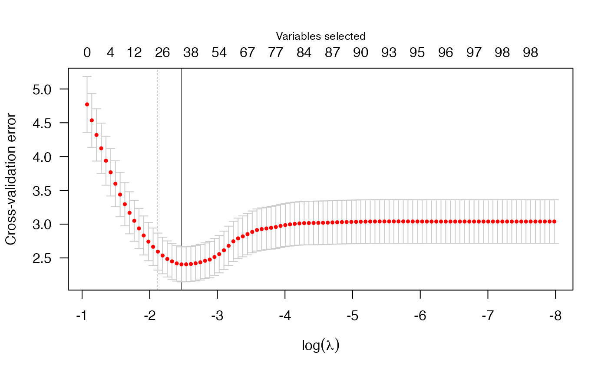

Getting started with penalizedLMM
Tabitha Peter
2023-01-19
getting_started.RmdNOTE: This vignette is under development – not all of the examples here are fully worked through. In fact, as of this writing, most of them are not working yet. My work here is an example of working with the garage door open.
Introduction
penalizedLMM is an R package created for
the purpose of fitting penalized regression models to high dimensional
data, particularly that in which the observations are not independent.
This kind of data arises often in the context of genetics (e.g.
GWAS dealing with population structure), and this will be the motivation
for the examples presented here.
At this time, the package is designed for linear regression only – that is, we are considering only continuous (numeric) outcomes. In the future, I would like to extend this package to handle logistic regression (to handle dichotomous outcomes).
Since we are focused on penalized regression in this package,
penalizedLMM offers 3 choices of penalty: the minimax
concave (MCP), the smoothly clipped absolute deviation (SCAD), and the
least absolute shrinkage and selection operator (LASSO). Much of the
work in this package is built on the concepts/techniques provided in the
ncvreg package, whose author is
my thesis advisor.
penalizedLMM currently includes three example data
sets:
admixis a small data set (197 observations, 100 SNPs) that describes individuals of different racial backgrounds. The outcome ofadmixis simulated to include population structure effects (i.e. race/ethnicity have an impact on the SNP associations).cad_lite(acronym for coronary artery disease) is a lower mid-sized data set (1401 observations, 4217 SNPs) with several health outcomes as well as age and sex information. This data set is a subset of a much larger data set (the original data has over 800K SNPs). For for information on this data set, refer to the original publication.cad_midis an upper mid-sized data set (1401 observations, 42117 SNPs) with several health outcomes as well as age and sex information. This data set is a larger subset the same data used as the reference forcad_lite.
In this overview, I will provide a demo of the main functions in
penalizedLMM using both of these data sets.
Basic model fitting
The admix data is already formatted to have an \(X\) and \(y\), so I can jump right in with a call to
plmm:
admix_fit <- plmm(X = admix$X, y = admix$y)
summary(admix_fit, lambda = admix_fit$lambda[95])
# MCP-penalized regression model with n=, p=101 at lambda=0.0265
# -------------------------------------------------
# The model converged
# -------------------------------------------------
# # of non-zero coefficients: 79
# Constant features (features without variation): Feature 8 Feature 14
# -------------------------------------------------The cad_lite data is in the bed/bim/fam format, so I
need to do some preprocessing first:
cad_lite <- process_plink(prefix = "cad_lite",
dataDir = plink_example(path="cad_lite.fam",
parent=T))
#
# Preprocessing cad_lite data:
#
# Removed 148 SNPs that are monomorphic or outside of chromosomes 1-22.
#
# There are 3280 SNPs with missing data that we will attempt to impute.
# SNPs tagged by a single SNP: 3519
# SNPs tagged by multiple tag haplotypes (saturated model): 550
#
# There are 685 SNPs with missing data after imputation.
#
# Of these SNPs, 5 have call rates <= 50% and will be removed.
#
# There are 684 SNPs that still have missing data which will be imputed with the HWE expected value.
# Imputation complete; alignment check passed
# Preprocessing cad_lite data DONE!
#
# Subjects: 1401
# SNPs: 4064
# Missing values: 0
# NB: the 'quiet' option in process_plink() will silence the printed messages
cad_clinical <- read.csv(plink_example(path="cad_clinical.csv"))
# for the sake of illustration, I use a simple mean imputation for the outcome
cad_clinical$hdl_impute <- ifelse(is.na(cad_clinical$hdl),
mean(cad_clinical$hdl, na.rm = T),
cad_clinical$hdl)Now that we have the data processed, we can fit a model.
# cad_lite_fit <- plmm(X = cad_lite$genotypes, y = cad_clinical$hdl_impute)
# names(cad_lite_fit)The returned beta_vals item is a matrix whose rows are
\(\beta\) coefficients and whose
columns represent values of the penalization parameter \(\lambda\). By default, plmm
fits 100 values of \(\lambda\) (see the
setup_lambda function for details).
We can summarize this fit at the 25th \(\lambda\) value:
# summary(cad_lite_fit, lambda = cad_lite_fit$lambda[25])Notice that a notable number of these SNPs are constant features – that is, SNPs whose values do not vary among the members of this population. For such features, a value of \(\beta=0\) is returned for all values of \(\lambda\).
In order to make this model run faster on my laptop (which is a 2015
MacBook Pro), I am going to re-run this model with an additional
argument \(k\). If \(k\) is specified and the package
RSpectra is installed, the singular value decomposition
algorithm is RSpectra::svds(k, ...) – this will be more
efficient.
# cad_lite_fit2 <- plmm(X = cad_lite$genotypes, y = cad_clinical$hdl_impute, k = 5)
# names(cad_lite_fit2)Let’s summarize this new fit –
# summary(cad_lite_fit2, lambda = cad_lite_fit2$lambda[25])
#TODO: examine why there is only one nonzero beta value returned here
# Notice that the two $\lambda$ values at which we examined `cad_lite_fit` and `cad_lite_fit2` were not the same; those values were `r cad_lite_fit$lambda[25]` and `r cad_lite_fit2$lambda[25]` respectively.
# Cross validation
To select a \(\lambda\) value, we
often use cross validation. Below is an example of using
cv.plmm to select a \(\lambda\) that minimizes cross-validation
error:
admix_cv <- cv.plmm(X = admix$X, y = admix$y, K = relatedness_mat(admix$X))
admix_cv_s <- summary.cv.plmm(admix_cv, lambda = "1se")
print.summary.cv.plmm(admix_cv_s)
# MCP-penalized model with n=197
# At minimum cross-validation error (lambda=0.0846):
# -------------------------------------------------
# Nonzero coefficients: 22
# Cross-validation error (deviance): 2.40
# Scale estimate (sigma): 1.551
plot(admix_cv)
To see how this would work for our cad_lite data, we can
use the lines below:
# FIXME: this is taking several minutes -- need to come back here
# cad_lite_cv <- cv.plmm(X = cad_lite$genotypes,
# y = cad_clinical$hdl_impute,
# K = relatedness_mat(cad_lite$genotypes))
# to see progress bar, run the above with the trace = TRUE argument
# print.summary.cv.plmm(summary.cv.plmm(cad_lite_cv, lambda = "min"))Predicted values
# make predictions for select lambda value(s)
admix_pred1 <- predict(object = admix_fit,
newX = admix$X,
type = "response",
idx=98)
# make prediction using blup
# admix_pred2 <- predict.list(fit = admix_fit,
# prep = plmm_prep(admix$X, admix$y),
# newX = admix$X,
# type = "blup",
# idx=98)
# compare y predictions
# admix_compare_y <- data.frame(y = admix$y, yhat_response = admix_pred1, yhat_blup = admix_pred2)
# colnames(admix_compare_y) <- c("Y", "Y hat response", "Y hat BLUP")
# print(head(admix_compare_y))
# make predictions when X is bigger
cad_lite_pred <- predict(object = cad_lite_fit,
newX = cad_lite$genotypes,
type='blup',
idx = which(cad_lite_fit$lambda == cad_lite_cv$lambda.1se),
# for BLUP prediction method, must supply X and y
X = cad_lite$genotypes,
y = cad_clinical$hdl_impute)
# compare the observed and predicted values
compare_cad_lite_y <- data.frame(cad_clinical$hdl_impute, cad_lite_pred)
colnames(compare_cad_lite_y) <- c("Y", "Y hat BLUP")
print(head(compare_cad_lite_y))< More to come… >